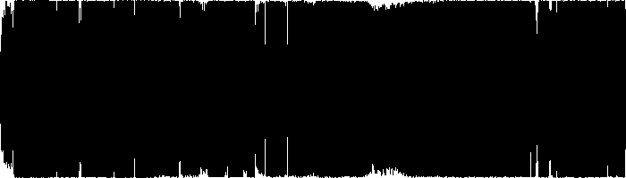
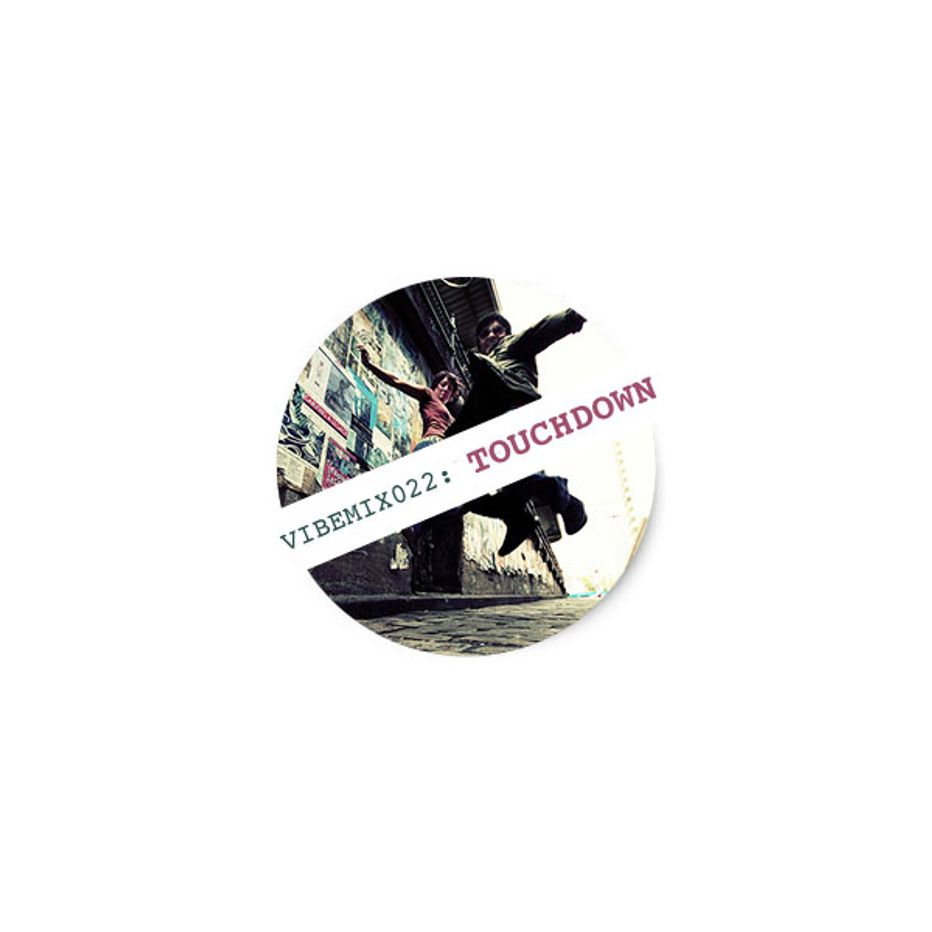

| VIBEMIX022: | TOUCHDOWN | ||
|---|---|---|---|
| 01 | Aphrodite | Mission (Mix 1) | 00:00 |
| 02 | Ed Solo | Step Back | 05:22 |
| 03 | L Double & Shy FX | The Shit | 10:25 |
| 04 | Pish Posh | Reflection Eternal (Fortified Live Remix) | 14:50 |
| 05 | E.P.S. & 2 Vibe feat. DJ Mark | Hype the Funk | 19:14 |
| 06 | Prisoners of Technology | Intoxicate (Intense Remix with TMS1) | 24:48 |
| 07 | Mampi Swift | The 1 | 30:12 |
| 08 | Aphrodite | Listen to the Rhythm | 35:14 |
| 09 | Principal | Come Down | 39:44 |
| 10 | Gang Related | Vibration | 43:29 |
| 11 | The Ganja Kru | Super Sharp Shooter | 50:09 |
| 12 | Sappo | Ding Dong Bass (Remix) | 55:27 |
| ℗ © 2015 | VIBERATIONS REC. |
|
 |
An introductory course into the world of Jump-Up sub-genre of Drum & Bass, the way it was two decades ago. |